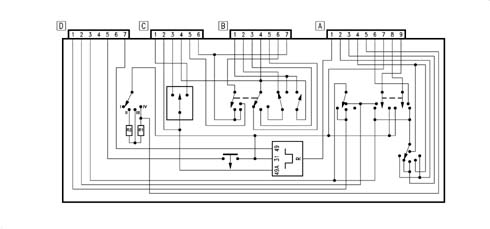
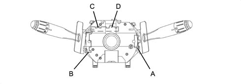
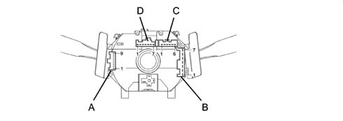

Introduction - MANOEUVRING AND WARNING SIGNALS
- Path
- Descriptions > 55 ELECTRICAL EQUIPMENT > 5550 MANOEUVRING AND WARNING SIGNALS > Introduction - MANOEUVRING AND WARNING SIGNALS
- Kind
- system description
- Applies to
- all engines; all production periods
- Interactive page
- https://sloeber94.github.io/elrnDB-fMltpl/en/#/2892454
Applies to: all engines; all production periods
STEERING COLUMN SWITCH UNIT
There are two levers on the steering column switch unit which control the following functions:
- side lights
- dipped headlamps
- main beam headlamps
- direction indicators
- windscreen wash/wipe
- rearscreen wash/wipe
- headlamp washers
Interior diagram
-

Front view
-

Rear view
-

Steering column switch unit pin-out
Connector A
Pin, Signal
1, Trailer direction indicator warning light
2, Windscreen wiper, high speed
3, Windscreen wiper, low speed
4, Windscreen wiper, medium speed
5, N.C.
6, Headlamp washer control
7, Earth
8, Windscreen washer pump
9, Windscreen washer pump
Connector B
Pin, Signal
1, Main beam headlamps
2, Dipped beam headlamps
3, N.C.
4, Supply controlled by the ignition (INT/A)
5, N.C.
6, Side lights supply
7, Supply controlled by the ignition (INT)
Connector C
Pin, Signal
1, Left direction indicator
2, Hazard warning lights control
3, Right direction indicator
4, N.C.
5, Rear fog lamp go ahead
6, N.C.
Connector D
Pin, Signal
1, Rearscreen wiper
2, Rearscreen wiper
3, Windscreen wiper supply
4, N.C.
5, Horns
6, N.C.
7, Hazard warning lights direct supply